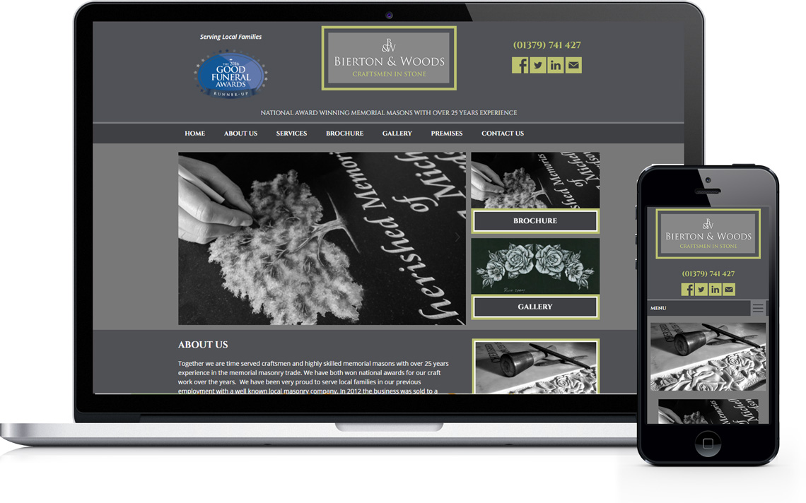

Together we are time served craftsmen and highly skilled memorial masons with over 25 years experience in the memorial masonry trade. We have both won national awards for our craft work over the years. We have been very proud to serve local families in our previous employment with a well known local masonry company. In 2012 the business was sold to a large Co-operative society so shortly after we decided to come together and open our very own local independent stone masonry business based at The Old Sack Factory Scole, near Diss. Here, once again we are honoured to have the opportunity to serve local families with a truly bespoke individual personal service enabling us to work together closely with the families to create a beautifully hand crafted final tribute for their loved one for all to be proud of.
We are both very proud to have provided care and attention for many local families at their time of need and we have completed memorials in